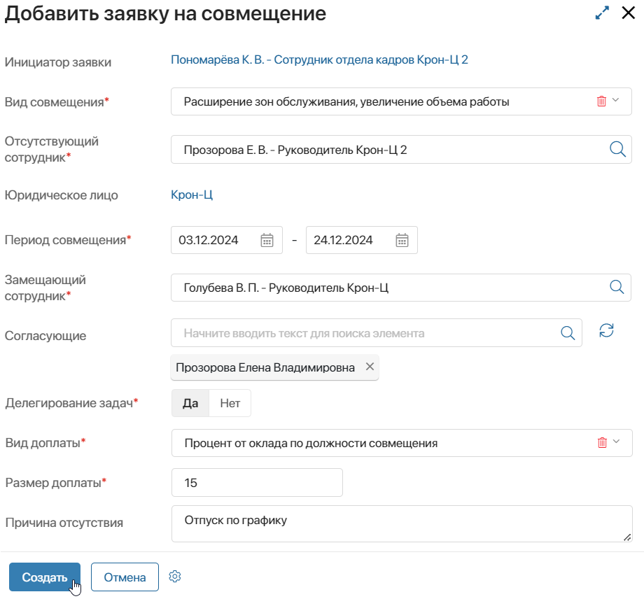
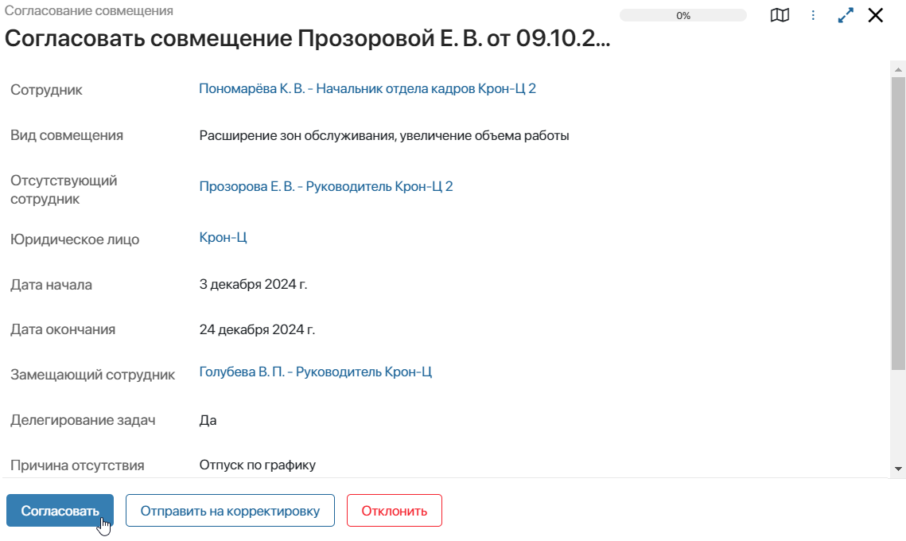
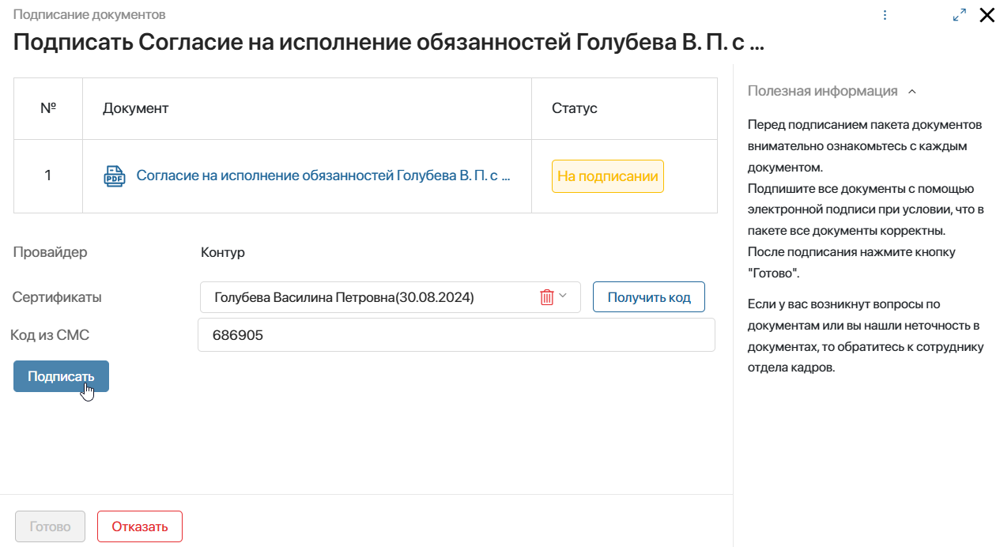
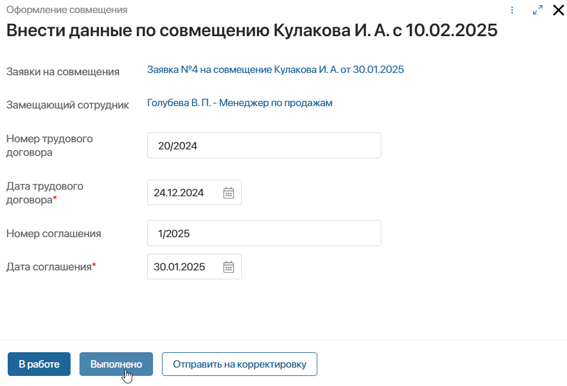
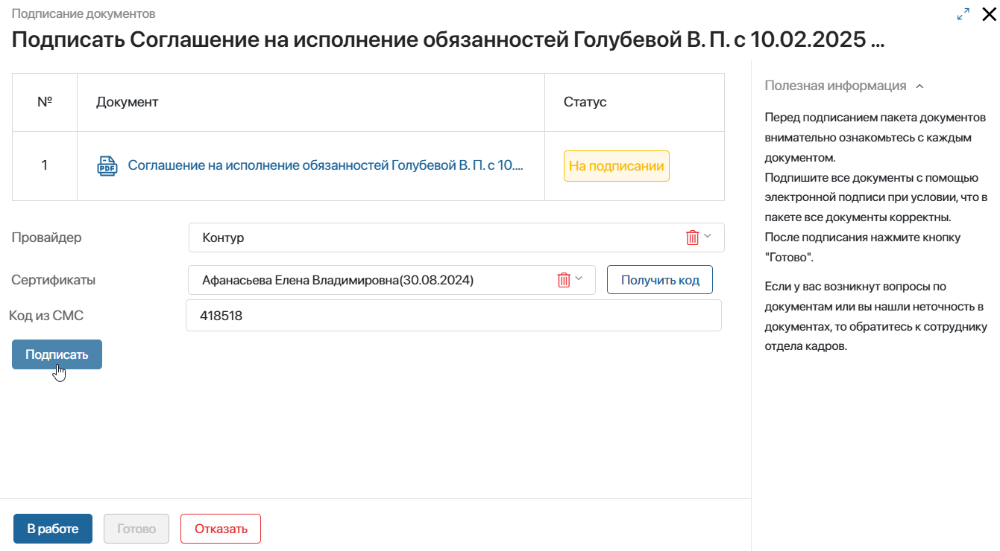

В ELMA365 КЭДО 3.0 вы можете оформить совмещение должностей — назначить одного сотрудника на должность другого на время его отсутствия: отпуска, больничного или командировки.
Совмещение создаётся на определённый период. Вы можете определить размер доплаты работнику за исполнение обязанностей другого сотрудника, заключить дополнительное соглашение с ним, а также установить делегирование задач.
Ход процесса совмещения должностей
Запуск процесса совмещения доступен для любого сотрудника:
- специалист отдела кадров может создать заявку на совмещение для любого сотрудника организации;
- руководитель подразделения может оформить совмещение на время своего отсутствия или отсутствия другого сотрудника из своих подчинённых;
- любой сотрудник оформляет совмещение на время своего отсутствия на портале КЭДО. Подробнее об этом читайте в статье «Оформить совмещение должностей с портала КЭДО».
Процесс совмещения включает в себя следующие этапы:
- Специалист отдела кадров создаёт заявку на совмещение должностей и запускает процесс.
- Руководитель замещающего согласовывает совмещения.
- Замещающий сотрудник просматривает данные по совмещению. Если в заявке установлена доплата, сотрудник подписывает согласие на исполнение обязанностей.
- Специалист отдела кадров вносит данные для формирования дополнительного соглашения на совмещение.
- Сотрудник, назначенный на роль подписанта от организации, подписывает дополнительное соглашение на исполнение обязанностей.
- Замещающий сотрудник подписывает соглашение на исполнение обязанностей.
Рассмотрим этапы процесса совмещения, которые выполняются его участниками из разделов интерфейса ELMA365.
Создание заявки на совмещение должностей
Для создания заявки на совмещение должностей специалист отдела кадров или руководитель подразделения выполняет следующие действия:
- Перейдите в раздел КЭДО 3.0 > Заявки на совмещения и в правом верхнем углу страницы нажмите + Заявка на совмещение.
- В открывшемся окне заполните необходимые данные:

- Инициатор заявки — в поле автоматически записывается сотрудник, создающий заявку. В зависимости от должности этого сотрудника определяются доступные на форме поля. Так, руководитель подразделения и специалист отдела кадров могут указать вид совмещения и сумму доплаты замещающему сотруднику;
- Вид совмещения* — руководитель подразделения и специалист отдела кадров определяют, каким образом сотрудник будет совмещать должность:
- Расширение зон обслуживания, увеличение объема работы — выберите опцию, если отсутствующий и замещающий сотрудники трудоустроены на одинаковую должность в одном отделе. Работник будет выполнять схожие обязанности по своей и чужой позиции;
- Исполнение обязанностей сотрудника — укажите опцию, если отсутствующий и замещающий сотрудники трудоустроены на разные должности по штатному расписанию. Работник будет выполнять дополнительные обязанности по этой позиции;
- Совмещение должностей — выберите опцию, если должность штатного расписания стала вакантной и на неё требуется временно назначить сотрудника для совмещения обязанностей с его позицией;
- Только делегирование — опция выбирается, если на замещающего необходимо только переназначать задачи отсутствующего сотрудника. В этом случае доплата за совмещение не устанавливается, согласие и соглашение на исполнение обязанностей не формируются в процессе.
- Отсутствующий сотрудник — укажите сотрудника, которого необходимо замещать. Выбрать можно только сотрудников, трудоустроенных в ту же организацию, что и инициатор заявки;
- Юридическое лицо — поле заполняется автоматически из карточки отсутствующего сотрудника. Благодаря этому в ходе процесса определяется подписант заявки на совмещение со стороны организации;
- Период совмещения* — выберите даты совмещения. На этот период замещающий сотрудник назначается на должность и/или будет получать переназначаемые задачи;
- Замещающий сотрудник* — укажите, кто из сотрудников будет назначен на замену отсутствующему работнику;
- Согласующие — в поле автоматически определяется руководитель замещающего сотрудника по штатному расписанию организации. Он согласовывает оформленное совмещение должностей. Если значение в поле не появилось, нажмите
 , чтобы найти руководителя повторно. Нажмите значок лупы, чтобы изменить или добавить согласующего. Если выбрано несколько сотрудников, согласовывать заявку будет каждый из них;
, чтобы найти руководителя повторно. Нажмите значок лупы, чтобы изменить или добавить согласующего. Если выбрано несколько сотрудников, согласовывать заявку будет каждый из них; - Делегирование задач* — выберите Да, чтобы на замещающего сотрудника переназначались текущие задачи отсутствующего. При совмещении типа Только делегирование опция включена по умолчанию.
Обратите внимание, задачи с конфиденциальной информацией, не поступают замещающему сотруднику, например, подписание приказа или ознакомление с расчётными листами;
- Вид доплаты* — выберите, какая доплата назначается сотруднику: Процент от оклада по основной должности, Процент от оклада по должности совмещения, Фиксированная сумма;
- Размер доплаты* — заполните процент доплаты или сумму для замещающего сотрудника;
- Причина отсутствия — укажите, по какой причине необходимо оформить совмещение должностей.
- После заполнения полей нажмите Создать.
Элемент сохранится в приложении Заявки на совмещения, в котором специалист отдела кадров сможет отслеживать текущий статус заявки. Кроме того, в карточке заявки сохранятся все связанные с ней документы.
После создания заявки запускается процесс совмещения, элемент отправляется на согласование.
Если по заявке не удалось определить руководителя или подписанта со стороны организации, администратору системы назначается задача указать сотрудников на эти роли.
Согласование совмещения руководителем
На форме задачи согласования совмещения руководитель замещающего сотрудника может:
- согласовать заявку;
- отправить заявку на корректировку создавшему её сотруднику, оставив свой комментарий;
- отклонить заявку, написав причину отказа. При выборе этого действия создавший заявку сотрудник получит задачу ознакомления с отказом. Процесс совмещения завершится.

Если согласующих указано несколько, каждый из них получает задачу согласовать заявку.
Шаг согласования заявки пропускается, если у отсутствующего сотрудника нет руководителя, например, он занимает самую главную должность по штатному расписанию.
Когда сотрудник оформляет замещение на время своего отсутствия с портала КЭДО, его руководитель на форме задачи устанавливает вид совмещения и доплату, включает делегирование задач.
Подписание согласия на исполнение обязанностей
После согласования с руководителем заявка отправляется указанному замещающему сотруднику для ознакомления с совмещением. Если в совмещении должностей указано только делегирование задач, процесс завершается.
Если в процессе определена сумма доплаты, формируется согласие на исполнение обязанностей. Замещающий подписывает его с помощью сертификата электронной подписи.

Если сотрудник не согласен на совмещение, он может отказаться от подписания документа.
Специалист отдела кадров получит задачу ознакомления с причиной отказа на совмещение. Он сможет выслать согласие замещающему на повторное подписание или отправить заявку на корректировку. В отдельной задаче он вносит изменения в заявку или отменяет её оформление.
Сформированные и подписанные сотрудником согласия на исполнение обязанностей хранятся в разделе КЭДО 3.0 > Согласия на совмещения. Этапы подписания документа можно отслеживать по его статусу.
Сформировать соглашение на исполнение обязанностей
На следующем этапе все сотрудники отдела кадров организации получают задачу внести номер и дату дополнительного соглашения на совмещение должностей.
Ответственный пользователь может взять задачу в работу, выполнить её или отправить заявку на совмещение на корректировку.

После внесения данных по совмещению документ формируется по шаблону и сохраняется в виде элемента приложения в разделе КЭДО 3.0 > Соглашения на совмещения.
Подписание соглашения работодателем
Далее соглашение отправляется подписанту от организации, который определяется по штатному расписанию. Он просматривает документ и подписывает его.

Сотрудник может отказаться от подписания, например, если данные указаны неверно. Специалисту отдела кадров назначается задача, в которой он может отправить соглашение на повторное подписание или выслать заявку на совмещение на корректировку. Во втором случае специалист отдела кадров в отдельной задаче вносит изменения в заявку или отменяет её оформление.
Подписание соглашения замещающим
Когда работодатель ознакомился с соглашением на исполнение обязанностей и подписал его, документ направляется указанному замещающему сотруднику. Он просматривает соглашение и подписывает его.
Внутренний пользователь сможет открыть задачу из раздела интерфейса ELMA365. Если замещающий является внешним пользователем, подписать документ можно через Портал КЭДО.
Если сотрудник откажется от подписания, специалисту отдела кадров поступает задача, в которой он может отправить соглашение на подписание повторно или передать заявку на корректировку.